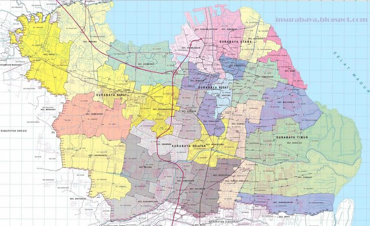

Surabaya is the capital of East Java Province and the second-largest metropolis in Indonesia. Strategically located on the northern coast along the Madura Strait, it serves as the primary economic, commercial, and transportation hub for eastern Indonesia. This coastal position has endowed the city with a dynamic blend of rapid urban modernization, rich maritime heritage, and vibrant industrial activity.
Revered nationally as the Kota Pahlawan (City of Heroes) due to the pivotal Battle of Surabaya in 1945, the city is deeply rooted in history. It is filled with iconic landmarks such as the Submarine Monument (Monkasel), the Heroes Monument (Tugu Pahlawan), and the historic Red Bridge (Jembatan Merah). Beyond its historical sites, Surabaya beautifully balances commercial growth with green public spaces, boasting lush parks like Bungkul Park. Culturally, the city possesses a distinct East Javanese identity, celebrated through traditional performing arts like Ludruk and legendary culinary icons such as Rujak Cingur and Rawon.
Furthermore, Surabaya is renowned as a major trade and educational gateway in Indonesia. Home to Tanjung Perak, one of the country's busiest seaports, the city drives international trade and shipbuilding industries, highlighted by the state-owned shipbuilder PT PAL. Additionally, it is a thriving educational center, featuring prominent institutions like the Sepuluh Nopember Institute of Technology (ITS) and Universitas Airlangga (UNAIR), fostering the next generation of innovators.

From the majestic Heroes Monument to the Suramadu Bridge stretching across the Madura Strait, and the colonial architectural heritage of the Old Town, Surabaya is where I grew up. This dynamic city has taught me the true meaning of hard work, discipline, and consistency in pursuing my dreams.